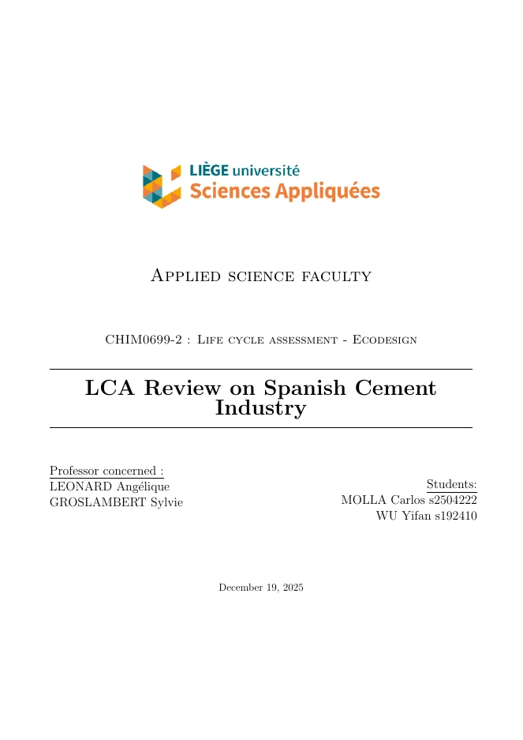

- SimaPro
- Ecoinvent
- Excel
- Python
- pyGAPS
- scikit-learn
- PySR
- IA generativa
Sostenibilidad
Durante mi formación me he dado cuenta de que los recursos del planeta son finitos y de que el clima ya está cambiando. Las decisiones que se tomen en esta década sobre cómo producimos energía, materiales y edificios marcarán la calidad de vida de las próximas generaciones. La sostenibilidad ya no es una opción: es una condición para que la industria siga siendo viable. Por eso he orientado siempre mis estudios a colaborar en el impulso de la transición energética. Como ejemplo, presento un proyecto sobre cómo reducir el CO₂ equivalente de los cementos mediante distintos procesos y escenarios, y mi Trabajo Fin de Grado sobre la captura de CO₂ por adsorción.
Ciclo de vida del cemento
Proyecto de máster, Universidad de Lieja
En la asignatura Life Cycle Assessment and Ecodesign modelé en equipo con SimaPro la producción de cemento en España, a partir del estudio de García-Gusano et al. (2015): primero el clínker, después cinco tipos de cemento y, por último, un escenario con combustibles alternativos. Mi modelo reproduce el resultado de referencia en cambio climático con una diferencia del 0,3 %.
- NormaISO 14040 / 14044
- HerramientasSimaPro 10.2 y Ecoinvent 3, método ILCD 2011
- AlcanceDe la cuna a la puerta
- Unidades funcionales1 t de clínker y 1 t de cemento
La industria también tiene que descarbonizarse
La transición energética suele contarse desde la generación eléctrica, pero una parte enorme de las emisiones procede de lo que fabricamos. El cemento es el ejemplo más claro: es imprescindible para cualquier infraestructura y, a la vez, uno de los materiales con más huella de carbono del planeta.
Lo que más me llamó la atención al estudiarlo es que más de la mitad de su CO₂ no sale de quemar combustible, sino de la propia química del proceso. Cambiar de combustible no basta: hay que cambiar también la receta del producto. Y para saber qué cambio funciona, hay que medirlo.
de las emisiones mundiales de CO₂ procede del cemento. Si fuera un país, sería el tercer mayor emisor del mundo, solo por detrás de China y Estados Unidos.
Fuente: Chatham House, 2018de las emisiones de CO₂ de España en 2010 correspondieron a las 23,5 millones de toneladas de cemento producidas ese año.
Fuente: García-Gusano et al., 2015del CO₂ equivalente de una tonelada de clínker en mi modelo procede de la calcinación de la caliza, una reacción química que ningún combustible puede evitar.
Elaboración propia a partir del modelo en SimaProMenos clínker, menos impacto
Comparé cinco cementos con distinta proporción de clínker y de materiales que lo sustituyen: escoria de alto horno, puzolana, cenizas volantes y caliza. El cemento Portland (CEM I) es el de mayor impacto en todas las categorías y sirve de referencia.
El patrón es claro: cuanto menos clínker, menor impacto. El cemento compuesto (CEM V/A), con solo un 52 % de clínker, reduce los impactos entre un 30 y un 45 % y cumple las mismas normas de resistencia a largo plazo. Selecciona una categoría para comparar.
Impacto relativo a 1 t de CEM I (100 %). Valores del informe, redondeados.
No toda alternativa es más limpia
Sustituir la mitad del combustible fósil por neumáticos usados reduce la toxicidad, el ozono fotoquímico y la acidificación, pero aumenta el cambio climático en torno a un 10 %: el caucho sintético también es de origen fósil. Sin un análisis de ciclo de vida, esta medida se habría presentado como una mejora.
Combinar los neumáticos con biomasa, como residuos de madera, para mantener el poder calorífico y reducir a la vez la huella de carbono.
Lecciones para la industria
- La producción de clínker concentra la mayor parte de la carga ambiental del cemento, y el cambio climático es la categoría de impacto crítica.
- Reducir el contenido de clínker es la medida más eficaz: el cemento compuesto disminuye los impactos entre un 30 y un 45 % con respecto al Portland.
- La sustitución de combustibles exige una selección basada en datos: solo las fracciones de biomasa garantizan una reducción real de las emisiones de CO₂.
- La fiabilidad de un análisis de ciclo de vida depende de la calidad del inventario, por lo que su revisión crítica es una etapa imprescindible.

Análisis de ciclo de vida del cementoPDF en inglés, 27 páginasCaptura de CO₂ por adsorción
Trabajo Fin de Grado, I3A, Universidad de Zaragoza
Dentro de un proyecto del Instituto de Investigación en Ingeniería de Aragón (I3A), desarrollé herramientas en Python para acelerar el diseño de columnas de adsorción, que retienen el CO₂ de corrientes de gas como el biogás. La pregunta clave es cuánto tarda una columna en saturarse y dejar escapar el CO₂: el llamado punto de ruptura.
Responderla en el laboratorio exige muchos ensayos. Mi trabajo fue construir un flujo numérico que lo predice a partir de las condiciones de operación, para ahorrar tiempo experimental y material adsorbente.
- 01Datos FAIR
Herramientas con pyGAPS para analizar isotermas de adsorción y convertirlas al formato de la base de datos del NIST.
- 02136 simulaciones
Diseño de experimentos con hipercubo latino y un script que automatiza el simulador RUPTURA desde Excel.
- 03Modelo sustituto
Regresión de procesos gaussianos con scikit-learn para predecir el punto de ruptura en cualquier condición.
- 04Ecuaciones simples
Descomposición tensorial (97,6 % de precisión) y regresión simbólica con PySR para obtener fórmulas aplicables en el laboratorio.